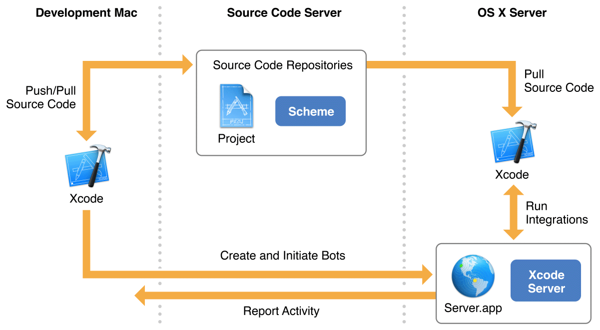

在Xcode中，持续集成是自动化和简化Mac和iOS应用程序的构建，分析，测试和存档的过程，以确保它们始终处于可释放状态。在持续集成工作流程中，您可以在开发Mac上的Xcode本地编写应用程序，并将它们检入源代码存储库。然后将它们发送到OS X服务器提供的服务Xcode Server进行处理。在开发Mac上的Xcode中，您设置了运行在服务器上的僵尸程序。这些机器人使用存储库中的源代码处理您的应用程序，并报告结果。bot的每次运行称为集成，并且这些运行在整个应用程序的开发生命周期中定期发生

持续集成的目标是提高软件质量，实现这一目标有多种方式：
快速，轻松，及早地捕捉问题。每次将代码更改提交到源代码存储库，按照特定的时间表或者手动启动它们时，Bot集成都可以设置为运行。这使您可以在整个开发过程中识别代码问题，在问题发生时解决问题，并防止将较小的问题级联到较大的问题。
加强协作。在持续集成工作流程中，您的整个团队（或选定的个人）可以创建机器人，触发集成，查看活动和下载构建。如果引入问题，代码更改导致失败的人将自动收到通知。
扩大测试覆盖范围。在本地工作时，在具有多种配置的多个设备上测试您的应用程序是一项手动和时间密集型过程。在持续集成工作流程中，它自动且简单。只需将多个设备插入服务器或将工作流配置为使用多个模拟器，相应地配置您的机器人，并让系统为您完成工作。
随着时间的推移生成构建和测试统计。在持续集成工作流程中，记录所有进度和失败。在任何时候，您都可以看到您的应用程序在开发过程中的位置以及它随着时间的推移如何成熟。
[关于iOS自动化打包的一些分享](https://mp.weixin.qq.com/s/2epELEgB1TGfJLDr2ax6eQ